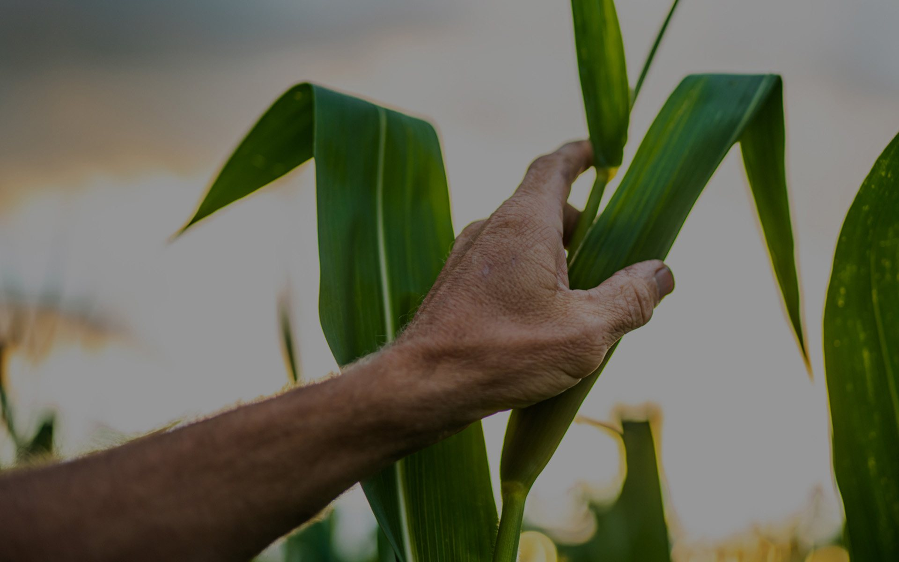
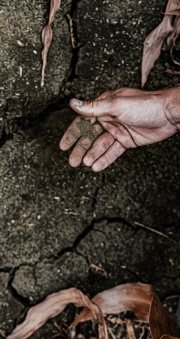
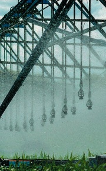
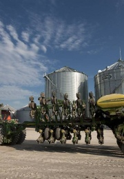
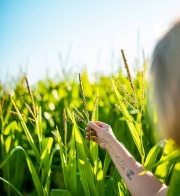
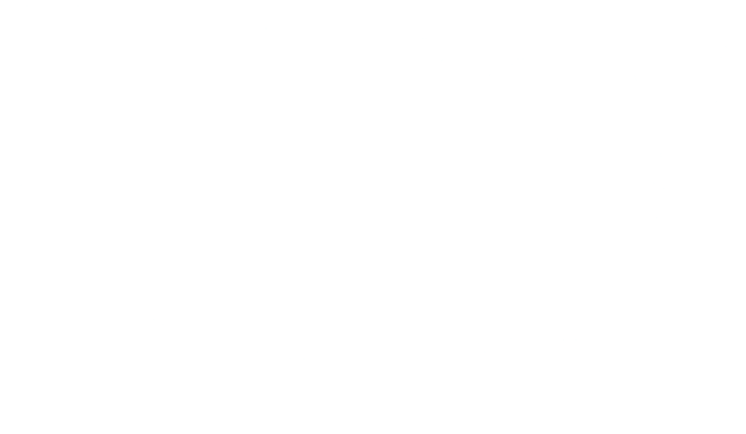

In a world where
sustainability
matters more than ever, we need
all the help we can get.
And there’s no greater
resource than these.
The capable hands of
American corn growers.
In a world where sustainability matters more than ever, we need all the help we can get.
And there’s no greater
resource than these.
The capable hands of
American corn growers.

These are the hands of
The American Corn Farmer
Since 1980, corn farmers invested in advanced technology that enables them to grow more with less. In fact, they are doing so 45% more efficiently with every bushel grown.
Since 1980, corn farmers invested in advanced technology that enables them to grow more with less. In fact, they are doing so 45% more efficiently with every bushel grown.
A Commitment to the Future
Corn farmers’ commitment to these pillars of sustainability have paved the way for improvements in a number of key indicators over a span a several decades.
Looking to 2030, corn farmers are committed to:
Looking to 2030, corn farmers are committed to:
Source - National Corn Growers Association
Changes in corn production since 1980
For today’s corn farmers, it means they are leaving the soil in a better place than where it started. With farms often being multi-generational, the emphasis on taking care of the land and the mantra to leave it better than before is not lost on the older or the next generation of farmers.
Source: Field to Market Indicators Report, 2016
Source: Field to Market Indicators Report, 2016
Adding Resilience Within an Ecosystem since 1980

Soil loss per acre decrased by

Irrigation water use per bushel decreased by
Per bushel land use decreased by

Energy use decreased by

Green house gas emissions decreased by
Soil loss per acre decrased
58%Irrigation water use per bushel decreased by
46%Per bushel land use decreased by
41%Energy use decreased by
41%Green house gas emissions decreased by
31%
Finding Efficiencies Leads to
Energy Savings
Changes in corn production since 1980
Source: Field to Market Indicators Report, 2016
Source: Field to Market Indicators Report, 2016
Environmental Sustainability
Environmental sustainability is a guiding principle for the U.S. corn industry. Farmers have demonstrated a dedication to continuous improvement in how they manage resources and how production impacts the land, water and air over the last several decades.
300,000
CORN FARMERS
Average Yield
168%
Bushels Per Acre
Produce
58%
of world's corn
on only
10%
OF THE LAND DEDICATED TO CORN PRODUCTION GLOBALLY
Driving large scale contributions to the U.S. economy

90.8
MILLION ACRES PLANTED
$59.6
BILLION CORN CROP VALUE
$2.27 T
WAGES
$885.30 B
TAXES
$4.20
BILLION BUSHELS PRODUCED
14.2
MILLION ACRES PLANTED
46,856,444
JOBS
90.8
MILLION ACRES PLANTED
$59.6
BILLION CORN CROP VALUE
$2.27 T
WAGES
$885.30 B
TAXES
$4.20
BILLION BUSHELS PRODUCED
14.2
MILLION ACRES PLANTED
46,856,444
JOBS